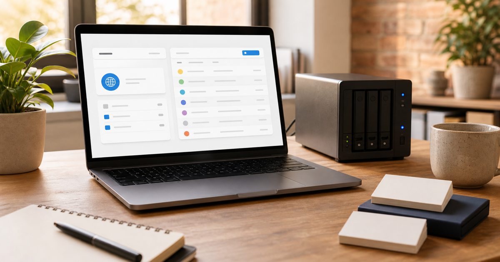
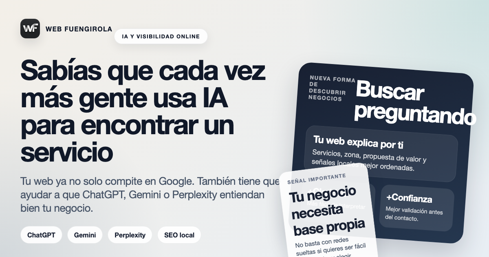

Dominio y hostingDomain, Hosting und E-Mail für lokale Unternehmen
Was jede Komponente macht, was du kontrollieren solltest und welche Details spätere Probleme vermeiden.
Artikel lesenKlare Artikel über Websites, lokales SEO, Google, soziale Netzwerke und KI für lokale Unternehmen mit mehr echten Anfragen.

Dominio y hostingWas jede Komponente macht, was du kontrollieren solltest und welche Details spätere Probleme vermeiden.
Artikel lesenUpdates, Sicherheit, Änderungen, Basis-SEO und technischer Support für lokale Unternehmen erklärt.
Artikel lesenWarum bezahlter Traffic eine fokussierte Seite braucht und nicht nur eine allgemeine Startseite.
Artikel lesenWas sich ändert, wenn Nutzer ChatGPT, Gemini, Perplexity und KI-Antworten nach lokalen Empfehlungen fragen.
Artikel lesenWie Bewertungen Vertrauen, lokales SEO und Conversion stärken, wenn sie mit der Website verbunden sind.
Artikel lesenWarum mobile Ladezeit Vertrauen, Rankings und Anfragen lokaler Unternehmen beeinflusst.
Artikel lesenWie man WhatsApp nutzt, ohne die Website mit Buttons und Ablenkungen zu überladen.
Artikel lesenWie mobile Dienstleistungen mit Einzugsgebieten, Bewertungen und klaren Seiten sichtbarer werden.
Artikel lesenEine Gesundheitswebsite muss zuerst Vertrauen schaffen: klare Leistungen, Team, Bewertungen und einfache Terminbuchung.
Artikel lesenReservierungen, Karte, Öffnungszeiten, echte Fotos und Google Maps: die Basis für bessere Restaurant-Anfragen.
Artikel lesenEine Website mit nur einer Seite kann funktionieren, wenn das Ziel klar ist, ist aber nicht immer die beste SEO-Basis.
Artikel lesenGoogle-Profil und Website sollten nicht konkurrieren: zusammen helfen sie Kunden, sicherer zu entscheiden.
Artikel lesenDie Fehler, die einer lokalen Website schaden, auch wenn sie auf den ersten Blick korrekt wirkt.
Artikel lesenDie Mindeststruktur, mit der eine lokale Website das Unternehmen erklärt, Anrufe auslöst und nicht nur von Social Media abhängt.
Artikel lesenWas sich schnell verbessern kann, was länger dauert und wie man Sichtbarkeitsprobleme einordnet.
Artikel lesenWann Social Media hilft, wann es zu kurz greift und warum eine Website Aufmerksamkeit besser in Kontakt verwandelt.
Artikel lesenProfil, Bewertungen, lokale Signale und Website: was bei Maps und lokalen Suchen meistens den Unterschied macht.
Artikel lesenWas den Preis wirklich beeinflusst, wann eine einfache Website reicht und warum nur der Endpreis oft täuscht.
Artikel lesenWas nach Stadt getrennt werden sollte, wann lokale Landingpages sinnvoll sind und wie KI zur Akquise passt.
Artikel lesenVorteile, Nachteile, Unterschiede zwischen Google und Social Media, Meta Ads und warum eine eigene Basis wichtig bleibt.
Artikel lesen
IA y visibilidadWie ChatGPT, Gemini und Perplexity bereits beeinflussen, wie Kunden Unternehmen entdecken und vergleichen.
Artikel lesen